Verzögern der Ausführung von XML-Elementen in ER-Formaten
[!include[banner](../includes/banner.md)]Übersicht
Sie können den Arbeitsgangdesigner des Frameworks für Elektronische Berichterstattung (ER) für das Konfigurieren der Formatkomponente einer ER-Lösung verwenden, die zum Generieren ausgehender Dokumente im XML-Format verwendet wird. Die hierarchische Struktur der konfigurierten Formatkomponente besteht aus Formatelementen verschiedener Typen. Diese Formatelemente werden verwendet, um generierte Dokumente zur Laufzeit mit den erforderlichen Informationen zu füllen. Wenn Sie ein ER-Format ausführen, werden die Formatelemente standardmäßig in der Reihenfolge ausgeführt, in der sie in der Formathierarchie dargestellt werden: einzeln nacheinander, von oben nach unten. Zur Entwurfszeit können Sie jedoch die Ausführungsreihenfolge für alle XML-Elemente der konfigurierten Formatkomponente ändern.
Durch Aktivieren der Option Verzögerte Ausführung für ein XML-Element im konfigurierten Format können Sie die Ausführung des Elements verzögern (hinausschieben). In diesem Fall wird das Element erst ausgeführt, wenn alle anderen Elemente des übergeordneten Elements ausgeführt wurden.
Weitere Informationen über diese Funktion erhalten Sie, wenn Sie das Beispiel in diesem Thema abschließen.
Einschränkungen
Die Option Verzögerte Ausführung wird nur für XML-Elemente unterstützt, die für ein ER-Format konfiguriert sind, das zum Generieren ausgehender Dokumente im XML-Format verwendet wird.
Die Option Verzögerte Ausführung wird nur für XML-Elemente unterstützt, die sich nur in einem anderen XML-Element befinden. Daher ist es nicht auf XML–Elemente anwendbar, die sich in anderen Formatelementtypen befinden (z. B. in einem XML-Sequenz-Element).
Die Option Verzögerte Ausführung wird nicht für XML-Elemente unterstützt, die sich im Formatelement Allgemein\Datei befinden, wenn die Option für Datei teilen auf Ja gesetzt ist. Weitere Informationen zum Teilen von Dateien finden Sie unter Teilen erstellter XML-Dateien auf Grundlage von Dateigröße und Inhaltsmenge.
Beispiel: Verzögern der Ausführung eines XML-Elements in einem ER-Format
In den folgenden Schritten wird erläutert, wie ein Benutzer mit der Systemadministrator- oder der Funktionaler Berater für elektronische Berichterstellung-Rolle ein ER-Format konfigurieren kann, das ein XML-Element enthält, dessen Ausführungsreihenfolge von der Reihenfolge in der Formathierarchie abweicht.
Diese Schritte können im USMF-Unternehmen in Microsoft Dynamics 365 Finance durchgeführt werden.
Voraussetzungen
Um das Beispiel in diesem Thema abzuschließen, müssen Sie für eine der folgenden Rollen Zugriff auf das USMF-Unternehmen in Finance haben:
- Funktionaler Berater für elektronische Berichterstellung
- Systemadministrator
Wenn Sie das Beispiel im Thema Verzögern der Ausführung von Sequenz-Elementen in ER-Formaten noch nicht abgeschlossen haben, laden Sie die folgenden Konfigurationen der ER-Beispiellösung herunter.
| Inhaltsbeschreibung | Dateiname |
|---|---|
| ER-Datenmodell-Konfiguration | Model to learn deferred elements.version.1.xml |
| Konfiguration der ER-Modellzuordnung | Mapping to learn deferred elements.version.1.1.xml |
Bevor Sie beginnen, müssen Sie auch die folgende Konfiguration der ER-Beispiellösung herunterladen und auf Ihrem lokalen Computer speichern.
| Inhaltsbeschreibung | Dateiname |
|---|---|
| ER-Formatkonfiguration | Format to learn deferred XML elements.version.1.1.xml |
ER-Beispielkonfigurationsdateien importieren
Wechseln Sie zu Organisationsverwaltung > Arbeitsbereiche > Elektronische Berichterstellung.
Wählen Sie Berichterstellungskonfigurationen aus.
Wenn auf der Seite Konfigurationen die Konfiguration für Model zum Erlernen verzögerter Elemente nicht im Konfigurationsbaum verfügbar ist, importieren Sie die ER-Datenmodellkonfiguration.
- Wählen Sie Austausch und dann Aus XML-Datei laden aus.
- Wählen Sie Durchsuchen aus, um die Datei Model to learn deferred elements.1.xml zu finden und auszuwählen und klicken Sie dann auf OK.
Wenn die Konfiguration für Zuordnung zum Verstehen verzögerter Elemente nicht im Konfigurationsbaum verfügbar ist, importieren Sie die ER-Modellzuordnungskonfiguration:
- Wählen Sie Austausch und dann Aus XML-Datei laden aus.
- Wählen Sie Durchsuchen aus, um die Datei Mapping to learn deferred elements.1.1.xml zu finden und auszuwählen und klicken Sie dann auf OK.
Import der ER-Formatkonfiguration:
- Wählen Sie Austausch und dann Aus XML-Datei laden aus.
- Wählen Sie Durchsuchen aus, um die Datei Format to learn deferred XML elements.1.1.xml zu finden und auszuwählen und klicken Sie dann auf OK.
Erweitern Sie in der Konfigurationsstruktur Modell zum Erlernen verzögerter Elemente.
Überprüfen Sie die Liste der importierten ER-Konfigurationen in der Konfigurationsstruktur.
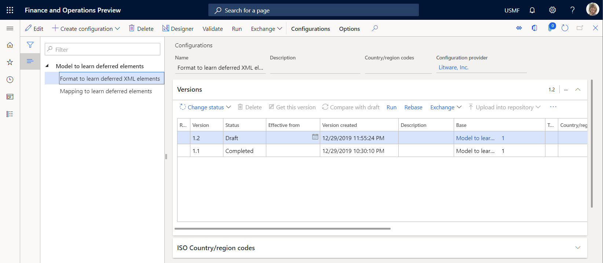
Aktivieren eines Konfigurationsanbieters
Wechseln Sie zu Organisationsverwaltung > Arbeitsbereiche > Elektronische Berichterstellung.
Überprüfen Sie auf der Seite Lokalisierungskonfigurationen im Abschnitt Konfigurationsanbieter, ob der Konfigurationsanbieter für das Beispielunternehmen Litware, Inc. (
http://www.litware.com) aufgeführt und als „Aktiv“ markiert ist. Wenn dieser Konfigurationsanbieter nicht aufgeführt oder nicht als „Aktiv“ markiert ist, befolgen Sie die Schritte im Thema Konfigurationsanbieter erstellen und als aktiv markieren.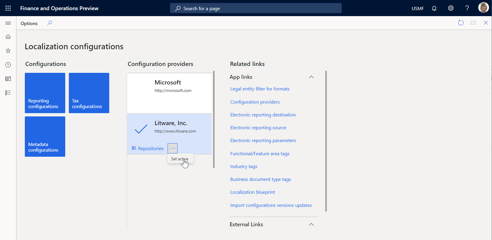
Überprüfung der importierten Modellzuordnung
Überprüfen Sie die Einstellungen der ER-Modellzuordnungskomponente, die für den Zugriff auf Steuerbuchungen konfiguriert ist, und stellen Sie auf Anforderung die aufgerufenen Daten bereit.
Wechseln Sie zu Organisationsverwaltung > Arbeitsbereiche > Elektronische Berichterstellung.
Wählen Sie Berichterstellungskonfigurationen aus.
Erweitern Sie auf der Seite Konfigurationen die Konfigurationsstruktur für Modell zum Erlernen verzögerter Elemente.
Wähle Sie die Konfiguration für Zuordnung zum Verstehen verzögerter Elemente aus.
Wählen Sie Designer aus, um die Liste der Zuordnungen zu öffnen.
Wählen Sie Designer aus, um die Zuordnungsdetails zu prüfen.
Wählen Sie Details anzeigen.
Überprüfen Sie die Datenquellen, die für den Zugriff auf Steuerbuchungen konfiguriert sind:
Die Datenquelle Transaktionen vom Typ Tabellendatensatz ist für den Zugriff auf Datensätze der Anwendungstabelle TaxTrans konfiguriert.
Die Datenquelle Belege vom Typ Berechnetes Feld ist so konfiguriert, dass die erforderlichen Belegcodes (INV-10000349 und INV-10000350) als Liste von Datensätzen zurückgegeben werden.
Die Datenquelle Gefiltert vom Typ Berechnetes Feld ist so konfiguriert, dass sie aus der Datenquelle Transaktionen nur Steuerbuchungen der erforderlichen Belege auswählt.
Das Feld $TaxAmount vom Typ Berechnetes Feld wird zur Datenquelle Gefiltert hinzugefügt, um den Steuerwert anzuzeigen, der das entgegengesetzte Vorzeichen hat.
Die Datenquelle Gruppiert vom Typ Gruppieren nach ist so konfiguriert, dass gefilterte Steuerbuchungen der Datenquelle Gefiltert gruppiert werden.
Das Aggregationsfeld TotalSum der Datenquelle Gruppiert ist so konfiguriert, dass Werte des Felds $TaxAmount der Datenquelle Gefiltert für alle gefilterten Steuerbuchungen dieser Datenquelle zusammengefasst werden.
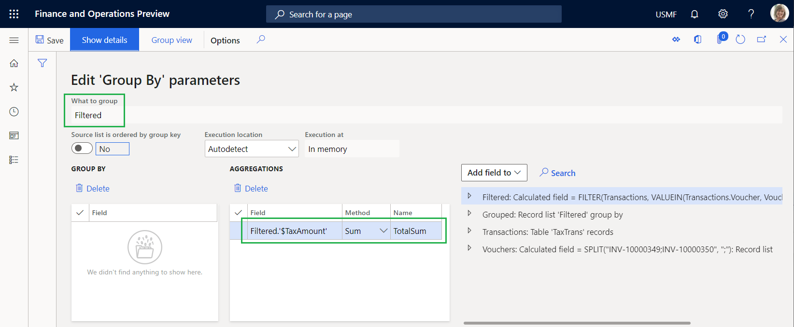
Überprüfen Sie, wie die konfigurierten Datenquellen an das Datenmodell gebunden sind und wie sie aufgerufene Daten verfügbar machen, um sie in einem ER-Format verfügbar zu machen:
- Die Datenquelle Gefiltert ist an das Feld Data.List des Datenmodells gebunden.
- Das Feld $TaxAmount der Datenquelle Gefiltert ist an das Feld Data.List.Value des Datenmodells gebunden.
- Das Feld TotalSum der Datenquelle Gruppiert ist an das Feld Data.Summary.Total es Datenmodells gebunden.
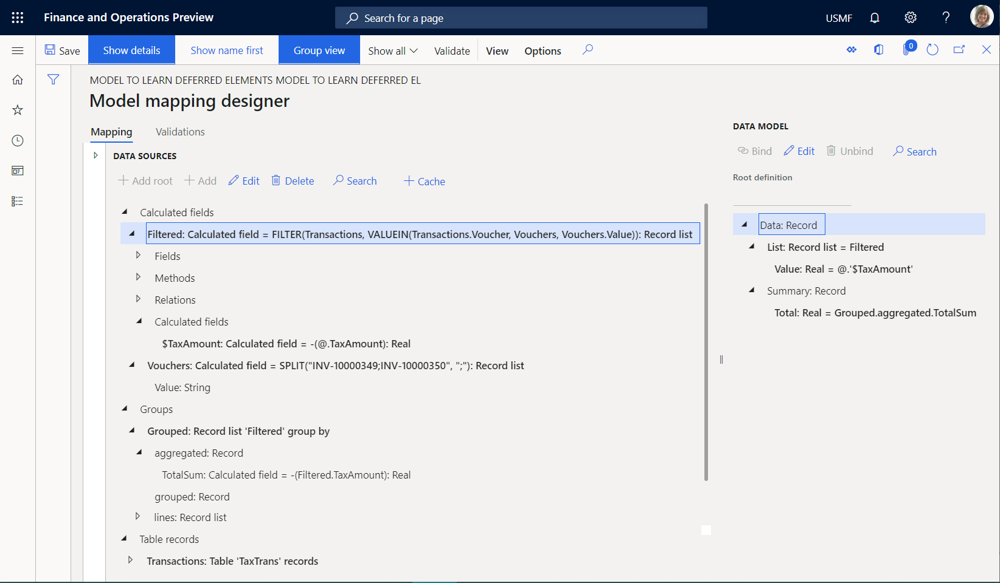
Schließen Sie die Seiten Modellzuordnungsdesigner und Modellzuordnungen.
Überprüfen Sie das importierte Format
Wählen Sie auf der Seite Konfigurationen in der Konfigurationsstruktur die Konfiguration für Format zum Verstehen verzögerter XML-Elemente aus.
Wählen Sie Designer aus, um die Formatdetails zu prüfen.
Wählen Sie Details anzeigen.
Überprüfen Sie die Einstellungen der ER-Formatkomponenten, die so konfiguriert sind, dass sie ein ausgehendes Dokument im XML-Format generieren, das Details zu den Steuerbuchungen enthält:
- Das Bericht\Nachricht-XML-Element ist so konfiguriert, dass es das ausgehende Dokument mit einem einzelnen Knoten füllt, der die verschachtelten XML-Elemente enthält (Header, Datensatz und Zusammenfassung).
- Das XML-Element Bericht\Nachricht\Header ist so konfiguriert, dass es das ausgehende Dokument mit einem einzelnen Header-Knoten füllt, der das Datum und die Uhrzeit der Bearbeitungsbeginns zeigt.
- Das XML-Element Bericht \Nachricht\Datensatz ist so konfiguriert, dass es das ausgehende Dokument mit einem einzelnen Datensatzknoten füllt, der die Details einer einzelnen Steuerbuchung anzeigt.
- Das XML-Element Bericht\Nachricht\Zusammenfassung ist so konfiguriert, dass das ausgehende Dokument mit einem einzelnen Zusammenfassungsknoten gefüllt wird, der die Summe der Steuerwerte aus den verarbeiteten Steuerbuchungen enthält.
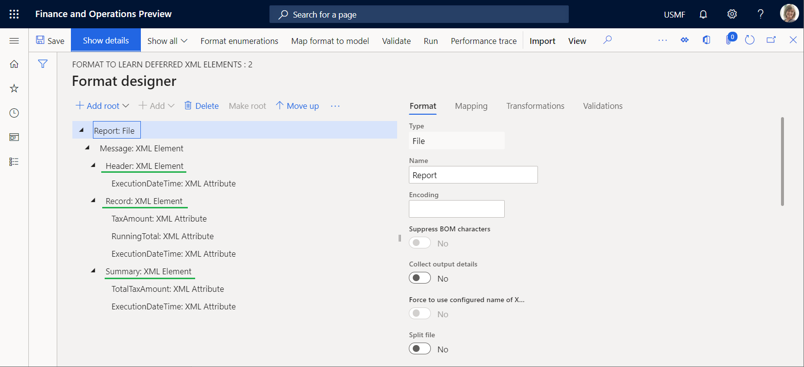
Überprüfen Sie auf der Registerkarte Zuordnung die folgenden Details:
- Das Element Bericht\Nachricht\Header muss nicht an eine Quelle gebunden sein, um einen einzelnen Knoten in einem ausgehenden Dokument zu generieren.
- Das ExecutionDateTime-Attribut generiert das Datum und die Uhrzeit (einschließlich Millisekunden), zu dem bzw. zu der der Header-Knoten hinzugefügt wird.
- Das Element Bericht\Nachricht\Datensatz ist an die Liste model.Data.List gebunden, um einen einzelnen Datensatzknoten für jeden Datensatz aus der gebundenen Liste zu generieren.
- Das TaxAmount-Attribut ist an model.Data.List.Value gebunden (wird als @.Value in der relativen Pfadansicht gezeigt), um den Steuerwert des aktuellen Steuerbuchung zu generieren.
- Das RunningTotal-Attribut ist ein Platzhalter für die laufende Summe der Steuerwerte. Derzeit hat dieses Attribut keine Ausgabe, da für dieses Attribut weder eine Bindung noch ein Standardwert konfiguriert ist.
- Das ExecutionDateTime-Attribut generiert das Datum und die Uhrzeit (einschließlich Millisekunden), zu dem bzw. zu der die aktuelle Transaktion in diesem Bericht verarbeitet wird.
- Das Bericht\Nachricht\Zusammenfassung-Element muss nicht an eine Datenquelle gebunden sein, um einen einzelnen Knoten in einem ausgehenden Dokument zu generieren.
- Das TotalTaxAmount-Attribut ist an model.Data.Summary.Total gebunden, um die Summe der Steuerwerte der verarbeiteten Steuerbuchungen zu generieren.
- Das ExecutionDateTime-Attribut generiert das Datum und die Uhrzeit (einschließlich Millisekunden), zu dem bzw. zu der der Zusammenfassungsknoten hinzugefügt wird.
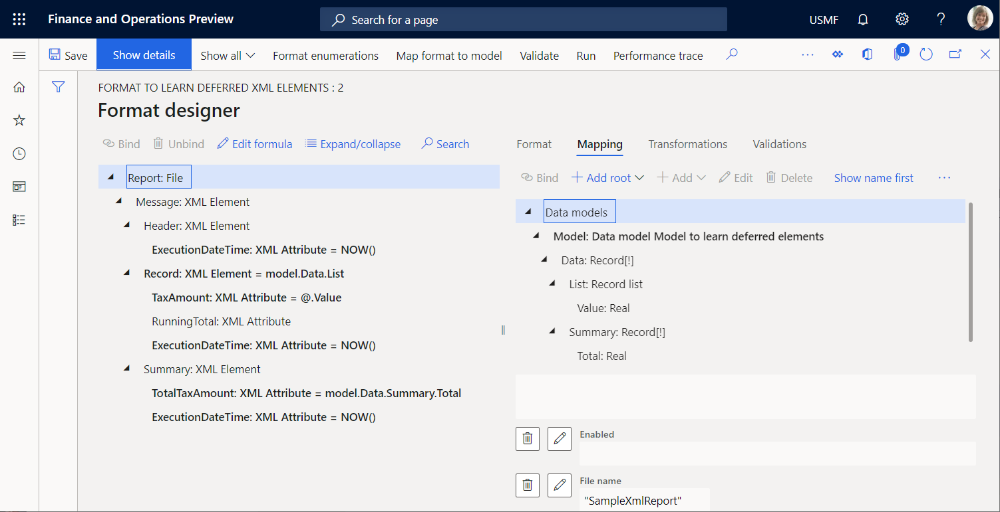
Importiertes Format ausführen
Wählen Sie auf der Seite Formatdesigner die Option Ausführen aus.
Laden Sie die vom Webbrowser angebotene Datei herunter und öffnen Sie sie zur Überprüfung.
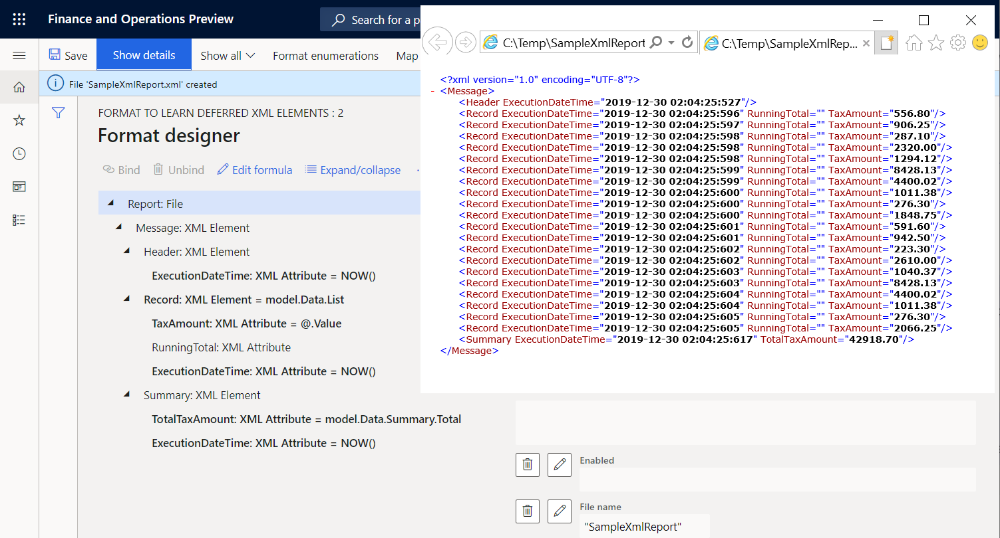
Beachten Sie, dass der Zusammenfassungsknoten die Summe der Steuerwerte für die verarbeiteten Transaktionen anzeigt. Weil das Format für die Verwendung der model.Data.Summary.Total-Bindung zum Zurückgeben der Summe konfiguriert ist, wird die Summe berechnet, indem die TotalSum-Aggregation der Datenquelle Gruppiert vom GroupBy-Typ in der Modellzuordnung aufgerufen wird. Um diese Aggregation zu berechnen, durchläuft die Modellzuordnung alle Transaktionen, die in der Datenquelle Gefiltert ausgewählt wurden. Durch Vergleichen der Ausführungszeiten des Zusammenfassungsknotens und des letzten Datensatzknotens können Sie feststellen, dass die Berechnung der Summe 12 Millisekunden (ms) gedauert hat. Durch Vergleichen der Ausführungszeiten des ersten und des letzten Datensatzknotens können Sie feststellen, dass die Generierung aller Datensatzknoten 9 ms gedauert hat. Daher waren insgesamt 21 ms erforderlich.
Ändern des Formats, sodass die Berechnung auf der generierten Ausgabe basiert
Wenn das Transaktionsvolumen viel größer als das Volumen im aktuellen Beispiel ist, kann sich die Berechnungszeit verlängern und Leistungsprobleme verursachen. Indem Sie die Einstellung des Formats ändern, können Sie diese Leistungsprobleme vermeiden. Da Sie auf Steuerwerte zugreifen, um diese in den generierten Bericht aufzunehmen, können Sie diese Informationen zur Berechnung von Steuerwerten wiederverwenden. Weitere Informationen finden Sie unter Konfigurieren des Formats für Inventuren und Summierungen.
Wählen Sie auf der Seite Formatdesigner auf der Registerkarte Format das Dateielement Bericht in der Formatierungsstruktur aus.
Legen Sie die Option Ausgabendetails sammeln auf Ja fest. Sie können dieses Format jetzt konfigurieren, indem Sie den Inhalt eines generierten Berichts als Datenquelle verwenden, auf die mit den integrierten ER-Funktionen der Kategorie Datensammlung zugegriffen werden kann.
Wählen Sie auf der Registerkarte Zuordnung das XML-Dokument Bericht\Nachricht\Datensatz aus.
Konfigurieren Sie den Ausdruck Gesammelter Datenschlüsselname als
WsColumn.Konfigurieren Sie den Ausdruck Gesammelter Datenschlüsselwert als
WsRow.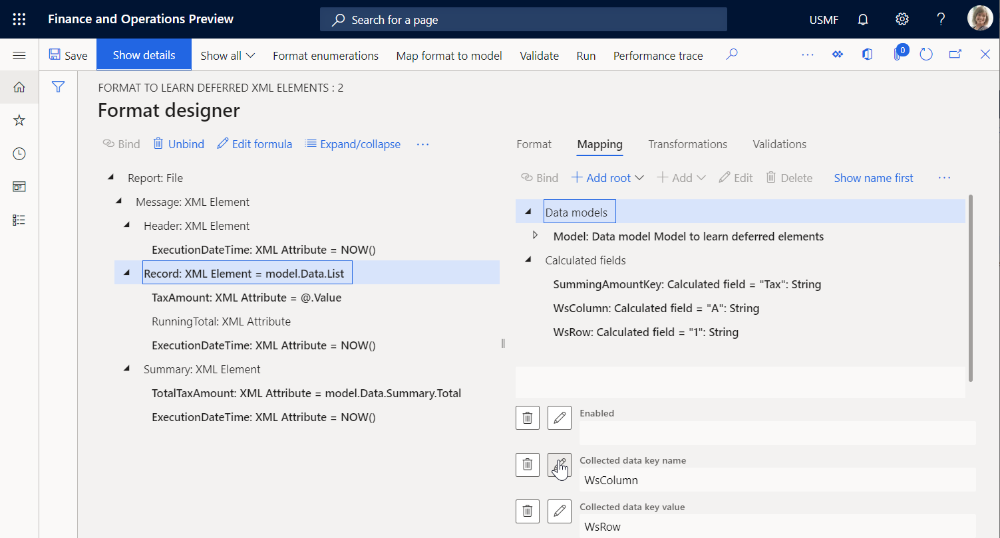
Wählen Sie das Attribut Bericht\Nachricht\Datensatz\TaxAmount aus.
Konfigurieren Sie den Ausdruck Gesammelter Datenschlüsselname als
SummingAmountKey.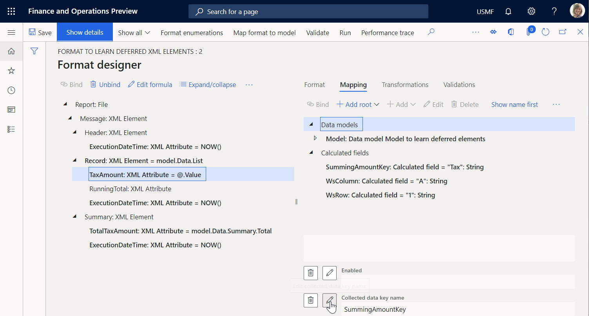
Sie können diese Einstellung als Erfüllung eines virtuellen Arbeitsblatts betrachten, bei dem der Wert der Zelle A1 durch den Wert des Steuerbetrags aus jeder verarbeiteten Steuerbuchung ergänzt wird.
Wählen Sie das Bericht\Nachricht\Datensatz\RunningTotal-Attribut und dann Formel bearbeiten aus.
Konfigurieren Sie den
SUMIF(SummingAmountKey, WsColumn, WsRow)-Ausdruck durch Verwendung der integrierten SUMIF-ER-Funktion und wählen Sie dann Speichern aus.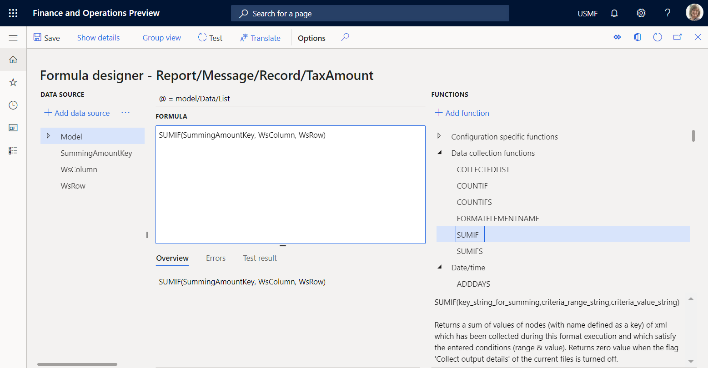
Schließen Sie die Seite Formeldesigner.
Wählen Sie Speichern und dann Ausführen aus.
Laden Sie die vom Webbrowser angebotene Datei herunter und öffnen Sie sie zur Überprüfung.
Der letzte Datensatzknoten enthält die laufende Summe der Steuerwerte, die für alle verarbeiteten Transaktionen unter Verwendung der generierten Ausgabe als Datenquelle berechnet werden. Diese Datenquelle beginnt am Anfang des Berichts und geht bis zur letzten Steuerbuchung. Der Zusammenfassungsknoten enthält die Summe der Steuerwerte für alle verarbeiteten Transaktionen, die in der Modellzuordnung unter Verwendung der Datenquelle des Typs GroupBy berechnet werden. Beachten Sie, dass diese Werte gleich sind. Daher kann die ausgabenbasierte Summierung anstelle von GroupBy verwendet werden. Durch Vergleichen der Ausführungszeiten des ersten Datensatzknotens und des Zusammenfassungsknotens können Sie feststellen, dass die Generierung aller Datensatzknoten und das Summieren11 ms gedauert hat. Daher ist das geänderte Format hinsichtlich der Erzeugung von Datensatzknoten und der Summierung von Steuerwerten ungefähr zweimal schneller als das ursprüngliche Format.
Wählen Sie das Bericht\Nachricht\Zusammenfassung\TotalTayAmount-Attribut und dann Formel bearbeiten aus.
Geben Sie den Ausdruck
SUMIF(SummingAmountKey, WsColumn, WsRow)anstelle des vorhandenen Ausdrucks ein.Wählen Sie Speichern und dann Ausführen aus.
Laden Sie die vom Webbrowser angebotene Datei herunter und öffnen Sie sie zur Überprüfung.
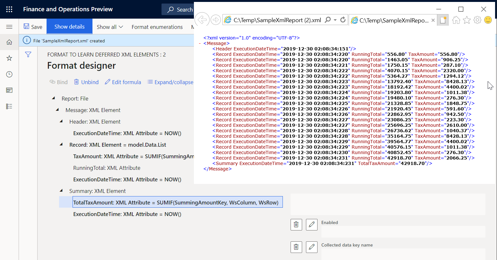
Beachten Sie, dass die laufende Summe der Steuerwerte im letzten Datensatzknoten jetzt der Summe im Zusammenfassungsknoten entspricht.
Ausgabenbasierte Summierungswerte im Berichtskopf angeben
Wenn Sie beispielsweise die Summe der Steuerwerte in der Kopfzeile Ihres Berichts angeben müssen, können Sie Ihr Format ändern.
Wählen Sie auf der Seite Formatdesigner auf der Registerkarte Format das XML-Element Bericht\Nachricht\Zusammenfassung aus.
Wählen Sie Nach oben.
Wählen Sie Speichern und dann Ausführen aus.
Laden Sie die vom Webbrowser angebotene Datei herunter und öffnen Sie sie zur Überprüfung.
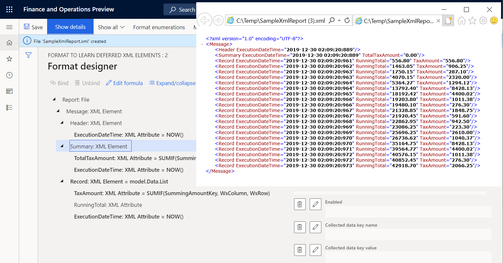
Beachten Sie, dass die Summe der Steuerwerte im Zusammenfassungsknoten jetzt gleich 0 (Null) ist, da diese Summe jetzt auf der Grundlage der generierten Ausgabe berechnet wird. Wenn der erste Datensatzknoten generiert wird, enthält die generierte Ausgabe noch keine Datensatzknoten mit Transaktionsdetails. Sie können dieses Format so konfigurieren, dass die Ausführung des Elements Bericht\Nachricht\Zusammenfassung verzögert wird, bis das Element Bericht\Nachricht\Datensatz für alle Steuerbuchungen ausgeführt wurde.
Verzögern der Ausführung des XML-Elements „Zusammenfassung“, sodass die berechnete Gesamtsumme verwendet wird
Wählen Sie auf der Seite Formatdesigner auf der Registerkarte Format das XML-Element Bericht\Nachricht\Zusammenfassung aus.
Legen Sie die Option Verzögerte Ausführung auf Ja fest.
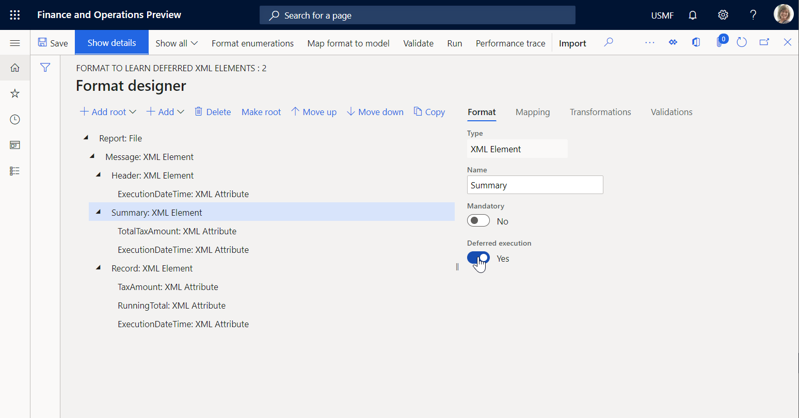
Wählen Sie Speichern und dann Ausführen aus.
Laden Sie die vom Webbrowser angebotene Datei herunter und öffnen Sie sie zur Überprüfung.
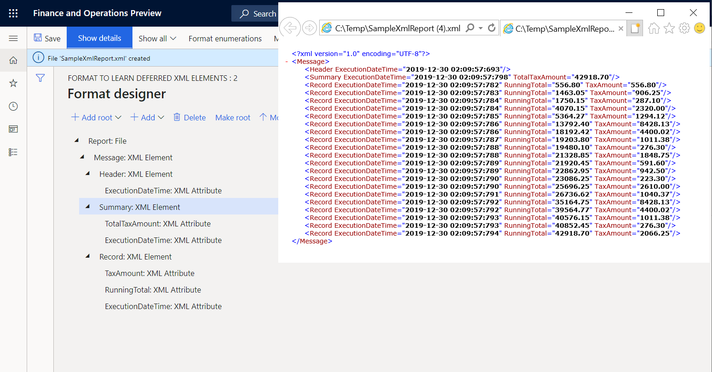
Das Element Bericht\Nachricht\Zusammenfassung wird jetzt nur dann ausgeführt, wenn alle Elemente unter dem übergeordneten Element, Bericht\Nachricht, bereits ausgeführt wurden. Deshalb wird es nach Ausführung des Elements Bericht\Nachricht\Datensatz für alle Steuerbuchungen der Datenquelle model.Data.List ausgeführt. Die Ausführungszeiten des ersten und des letzten Datensatzknotens sowie die der Header- und Zusammenfassungs-Knoten machen diesen Fakt deutlich.